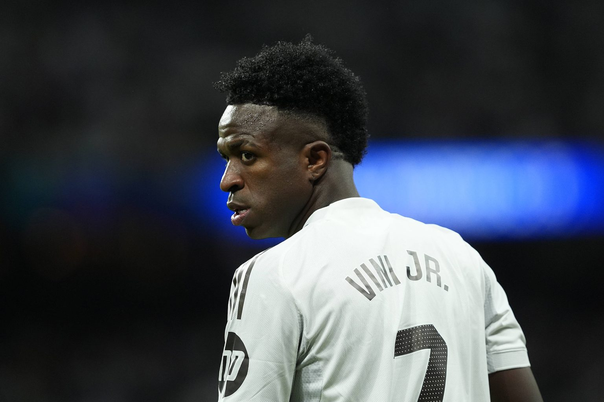

Vini Jr joga? Real Madrid x Manchester City ao vivo: onde assistir na Champions League

Real Madrid x Manchester City se enfrentam na tarde desta quarta-feira (11), às 17h (de Brasília), no Santiago Bernabéu, pelas oitavas de final da Liga dos Campeões 25/26, a Champions League.
Os duelos acontecem no formato clássico de mata-mata: jogos de ida e volta, valendo a classificação para a fase seguinte. Avança quem tiver vantagem na soma dos placares, e, em caso de igualdade, o desempate será na prorrogação e, se necessário, em disputa de pênaltis.
Onde assistir ao vivo
Real Madrid x Manchester City Data: Quarta-feira, 11 de março de 2026; Horário: 17h (de Brasília); Local: Santiago Bernabéu; Onde assistir ao vivo: HBO Max (verificar disponibilidade com seu serviço de streaming e/ou sua operadora de TV por assinatura).
Assumiram? Mbappé, do Real Madrid, volta a ser flagrado com famosa atriz da Netflix

Novas imagens divulgadas pela revista espanhola Hola reforçaram os rumores de um possível relacionamento entre o jogador francês Kylian Mbappé e a espanhola Ester Expósito, atriz que ganhou projeção mundial por seu papel como Carla em Elite, série original da Netflix
De acordo com as fotos publicadas pela revista, os dois foram vistos chegando juntos a Madri após um voo particular. A atriz foi a primeira a desembarcar da aeronave ao chegar à capital espanhola. Expósito apareceu com um visual casual, usando jeans, camisa branca, blazer marrom e um boné de beisebol. Poucos minutos depois, Mbappé também deixou o avião, vestindo um look esportivo composto por moletom branco e boné preto.